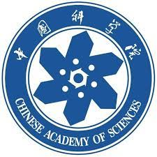

Ph.D. Candidate
School of Artificial Intelligence, University of Chinese Academy of Sciences
Center for Research on Intelligent Perception and Computing
National Lab of Pattern Recognition
Google Scholar | GitHub
Email: weinan.guan@cripac.ia.ac.cn
Address: 95, Zhongguancun East Road, Beijing 100190, China
I am a Ph.D. Candidate of CRIPAC (led by Prof. Tieniu Tan), National Laboratory of Pattern Recognition (NLPR), Institute of Automation, Chinese Academy of Sciences (CASIA) under the supervision of Prof. Tieniu Tan and Prof. Wei Wang, and co-supervised by Prof. Jing Dong and Prof. Bo Peng. Before that, I received my Bachelor degree from NorthEastern University (NEU) in 2018 under the supervision of Prof. Shu Wang. My current research interests mainly lie in the fields of deep learning and computer vision, especially Deepfake Detection.
|  |
University of Chinese Academy of Sciences (UCAS) Sep. 2018 - Now |
|
NorthEastern University (NEU) Sep. 2014 - Jun. 2018 |
Robust Face-Swap Detection Based on 3D Facial Shape Information
Weinan Guan, Wei Wang, Dong Jing, Bo Peng and Tieniu Tan
CAAI International Conference on Artificial Intelligence, 2022
PDF
|
BibTex
Collaborative Feature Learning for Fine-grained Facial Forgery Detection and Segmentation
Weinan Guan, Wei Wang, Dong Jing, Bo Peng and Tieniu Tan
arXiv
PDF
|
BibTex
Defending Against Deepfakes with Ensemble Adversarial Perturbation
Weinan Guan, Ziwen He, Wei Wang, Dong Jing and Bo Peng
2022 26th International Conference on Pattern Recognition (ICPR)
PDF
|
BibTex
Defeating DeepFakes via Adversarial Visual Reconstruction
Ziwen He, Wei Wang, Weinan Guan, Jing Dong, and Tieniu Tan
Proceedings of the 30th ACM International Conference on Multimedia (ACM MM 2022)
PDF
2020, 5th Place Winner of Competition on Artificial Face AI Detection (CAAD) in GeekPwn 2020